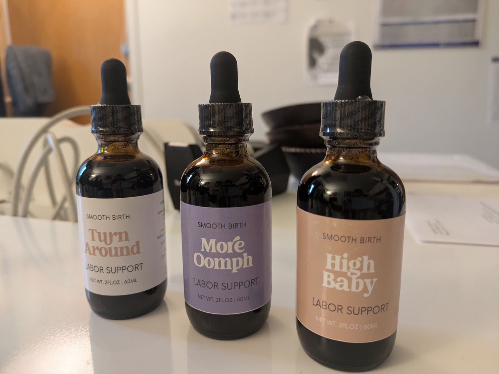
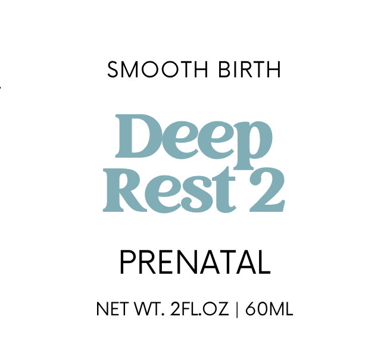
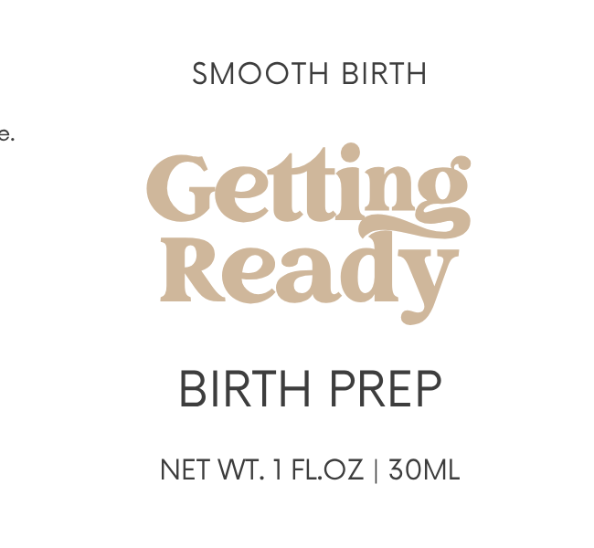
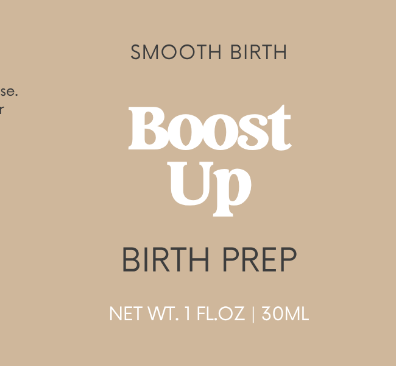
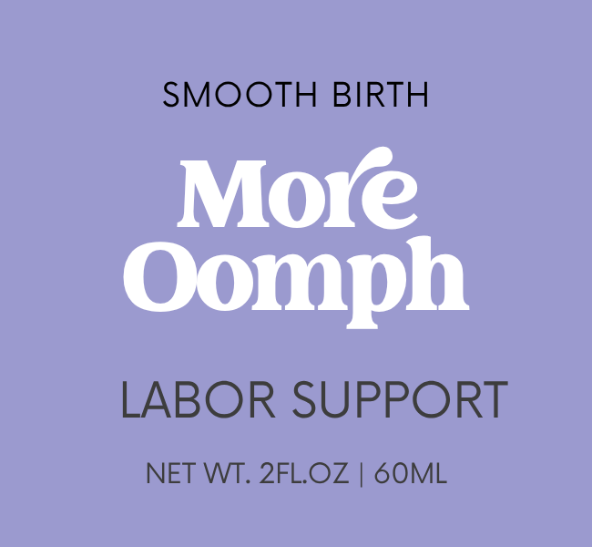
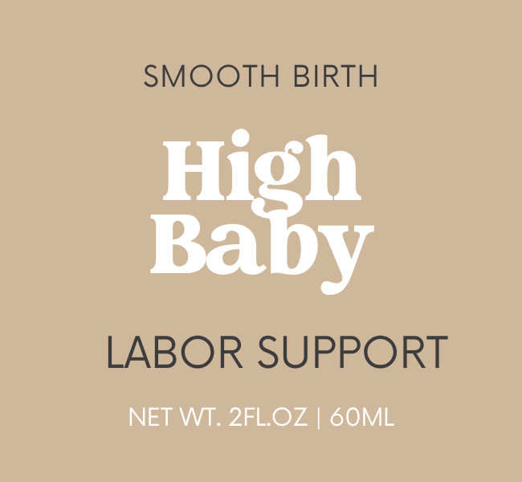
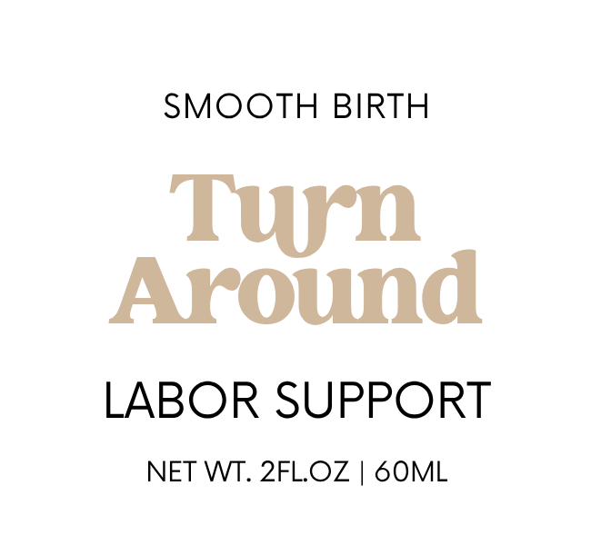
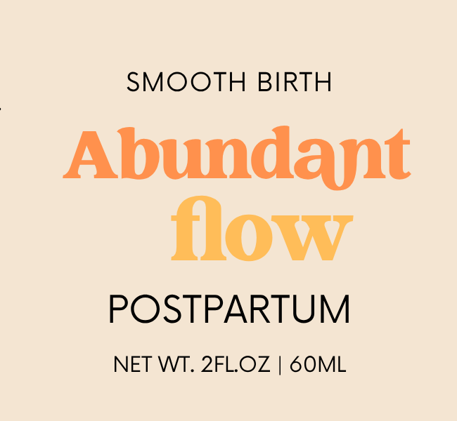

Targeted Support for the Pregnancy Journey
A comprehensive line of clinical-grade botanicals bridging ancient holistic wisdom with practical perinatal care.

Smooth Birth is a comprehensive line of traditional East Asian herbal tinctures specifically crafted to support you through every stage of your pregnancy journey. Formulated by a certified acupuncturist and herbalist, these gentle remedies bridge ancient holistic wisdom with practical, everyday physical needs.
Whether you are seeking relief from common prenatal discomforts like insomnia and heartburn, preparing your body for the physical marathon of labor, or replenishing your vital reserves during postpartum recovery, there is a targeted formula for your specific phase. Each blend uses safe, high-quality botanicals designed to work in harmony with your body’s shifting natural rhythms rather than overriding them. Ultimately, this apothecary collection empowers you to deeply nourish your system, maintain your energy, and confidently embrace a more balanced and comfortable birth experience.
Explore our ten targeted herbal formulations. Click any category below to expand the remedies designed for that phase of your journey.
Nurturing care for your first, second, and third trimesters. These foundational blends help alleviate common discomforts and optimize your overall wellness as your body naturally adapts to the demands of gestation.
Prenatal Edema, Fluid Balance & Carpal Tunnel Relief
Pregnancy asks your body to manage a massive increase in blood and fluid volume, which can easily lead to uncomfortable water retention. Swell Away safely addresses mid-to-late pregnancy lower body edema, polyhydramnios (excess amniotic fluid), and carpal tunnel syndrome. Unlike harsh diuretics that simply drain the body and deplete your energy, this formula strengthens your system’s natural ability to metabolize and process fluids, resolving heaviness and swelling while protecting your maternal reserves.
Extracted in organic cane alcohol and spring water:
Prenatal Sleep, Anxiety Relief & System Support
Pregnancy insomnia is rarely just about being "unable to sleep"—it is often the result of profound physical depletion. When your body is working overtime to build a baby, it can leave your nervous system feeling "tired but wired." Deep Rest 1 is a deeply nourishing tonic designed for the first through early third trimesters. Rather than acting as a heavy, groggy sedative, it gently resolves the underlying physical exhaustion that drives restless sleep and daytime anxiety.
Extracted in organic cane alcohol and spring water:

Late Pregnancy Sleep, Cooling & Night Sweat Relief
As you enter the final stretch of pregnancy, the massive physical demand often depletes your body's deep, cooling fluid reserves (Yin). This depletion creates a low-grade internal warmth that disrupts sleep, leading to night sweats, tossing and turning, and restless insomnia. Deep Rest 2 clears this internal heat and resets your body's temperature regulation so you can finally achieve deep, uninterrupted sleep.
Extracted in organic cane alcohol and spring water:
Prenatal Heartburn, Acid Reflux & Digestive Soothing
As your baby grows, physical upward pressure on your stomach often causes acid and energy to splash upward, creating uncomfortable heartburn. Cool Center offers fast, targeted relief for this mechanical reflux by gently redirecting rising stomach energy back downward. It actively cools the burning sensation and soothes the irritated digestive lining, all without artificially suppressing essential stomach acid.
Extracted in organic cane alcohol and spring water:
Gentle readiness for 37 weeks and beyond. Designed to naturally encourage cervical ripening, prepare your uterus, and prime your body for an efficient, coordinated labor.

General Birth Preparation & Pelvic Relaxation
The final weeks of pregnancy can feel heavy, tight, and stagnant. Getting Ready is a targeted, late-term herbal formula designed to encourage a spontaneous vaginal birth. By utilizing botanicals that actively expand and relax the abdomen and pelvis, this blend relieves late-pregnancy physical stagnation, soothes uterine muscles, and clears the energetic pathway for labor to begin naturally.
Extracted in organic cane alcohol and spring water:

Labor Stamina, Energy Building & Exhaustion Prevention
Birth is a physical marathon, and your body needs a full tank of gas to cross the finish line. Boost Up is an essential energy-building tonic that prepares you for the intense demands of labor by rapidly replenishing your deep reserves. By flooding your system with profound nourishment, this formula prevents maternal exhaustion, supports strong, effective uterine contractions, and significantly reduces the risk of labor stalling out due to fatigue.
Extracted in organic cane alcohol and spring water:
Targeted support for active birth, designed specifically for your midwife or doula to administer. These fast-acting formulas are utilized by your birth team to help sustain stamina, manage contractions, and provide grounded physical support during the height of labor.

Active Labor Support & Contraction Catalyst
Sometimes, despite all the best preparation, labor stalls. Whether due to maternal exhaustion, physical stagnation, or emotional blockages, contractions can space out, weaken, or stop altogether. More Oomph is a fast-acting, clinical-grade tincture designed specifically for active labor. It acts as a powerful catalyst to invigorate the uterus, move stagnant energy, and bring the strong, productive rhythm back to your contractions.
Extracted in organic cane alcohol and spring water:

Difficult Labor, High Fetal Station & Downward Descent
During a difficult labor, a baby will sometimes remain at a "high station," refusing to drop into the pelvis despite ongoing contractions. Often, this happens because maternal energy is stuck in the chest or upper body due to pain, fear, or exhaustion. High Baby is designed to break this gridlock: relaxing upper body tension, replenishing stamina, and strongly directing energy downward to clear the pathway for descent.
Extracted in organic cane alcohol and spring water:

Fetal Malposition, OP Babies & Difficult Labor Support
Sometimes labor stalls not because of exhaustion, but because of geometry. If a baby is in a suboptimal position (such as "sunny-side up" or slightly tilted), they cannot easily navigate the pelvis, leading to long, painful, and unproductive labors. Turn Around creates a unique, dual-directional energetic "torque" in the body, providing the uterus with the specific rotational movement required to help the baby rotate, tuck, and engage correctly.
Extracted in organic cane alcohol and spring water:
Restorative care for the fourth trimester. Crafted to replenish depleted energy, support deep tissue healing, and encourage balanced recovery as you transition into parenthood.

Postpartum Lactation Support & Deep Recovery
Making milk requires a massive amount of physical energy and hydration. After the marathon of birth, it is common for fluid and nutrient reservoirs to be temporarily depleted, making it difficult to establish a robust milk supply. Abundant Flow tackles this issue at the root: deeply replenishing vital fluids and blood lost during birth while using gentle moving herbs to keep milk ducts open and prevent maternal burnout.
Extracted in organic cane alcohol and spring water:
Simba Eun-Hye Shim is a licensed acupuncturist and certified Chinese (East Asian) herbalist with a Master of Acupuncture and Chinese Herbal Medicine from Southwest Acupuncture College in Boulder. Since 2021, she has served as a staff acupuncturist at Boulder Birth and Holistic Health, specializing in pregnancy, postpartum recovery, fertility, and comprehensive women’s care.
Working in a dynamic birth center environment provided Simba with the unique opportunity to collaborate alongside a dedicated team of perinatal professionals, including CNMs, CPMs, doulas, and lactation consultants. Exposed to a wide spectrum of obstetric and gynecological conditions, she witnessed firsthand the profound physical and energetic challenges birthing people face during their journeys—particularly during difficult or stalled labors. Watching these midwives utilize their amazing tools inspired a strong aspiration in Simba: she wanted to develop specialized, natural botanical support to bridge the gaps in perinatal care.
To find these solutions, Simba turned to the 3,000-year-old tradition of East Asian Herbal Medicine. Utilizing her fluency and literacy in classical Chinese and Korean medical literature, Simba dove into deep research of classical gynecological texts. The result is the Smooth Birth Apothecary: a line of targeted herbal tinctures utilizing formulas that have safely and naturally supported pregnant and birthing people for centuries.